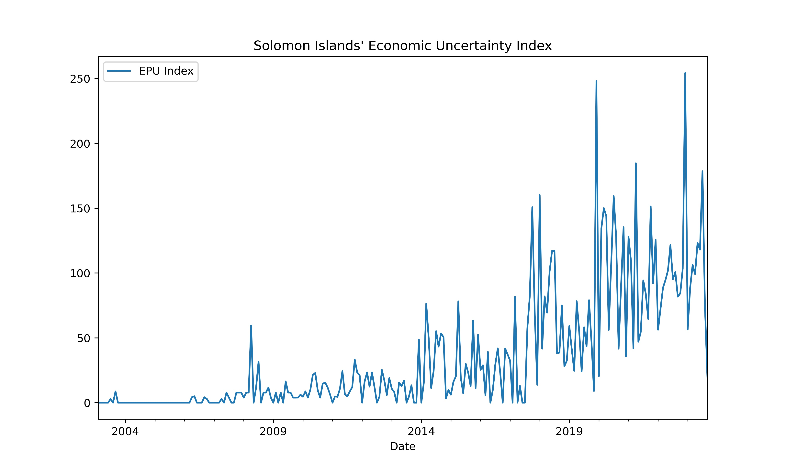
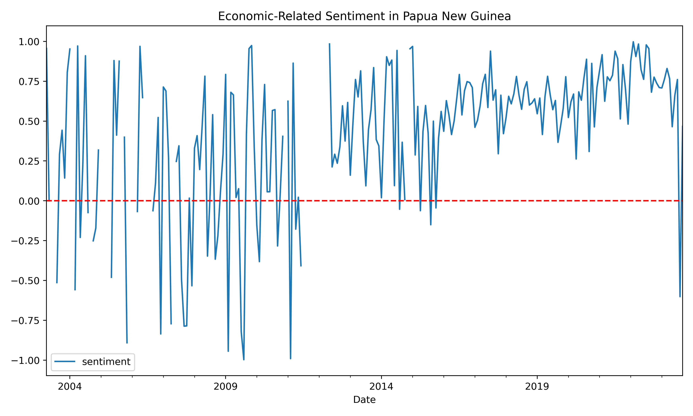

Introduction#
Economic Policy Uncertainty (EPU) Index#
Baker, Bloom, and Davis (2016) developed Economic Policy Uncertainty Index by exploiting the mention of economic, policy, and uncertainty group of terms on newspapers, and found that “innovations in policy uncertainty foreshadow declines in investment, output, and employment in the United States and … other 12 major economies.”


Sentiment Analysis#
Sentiment analysis has been frequently employed in analyzing financial markets and macroeconomic outlook. By analyzing economic-related news articles in Pacific Island Countries, it reveals the economic expectation of the country. The score ususally varies from -1 to 1, where -1 to -0.05 means negative, -0.05 to + 0.05 means neutral, and +0.05 to +1 means positive. Below displays the aggregated sentiment scores by month in Papua New Guinea and Solomon Islands.

 Notes: Newspapers include Post Courier, ABC AU and RNZ.
 Notes: Newspapers include Solomon Stars, Solomon Times, The Island Sun, Solomon Islands Broadcasting Corporation, ABC AU, and RNZ.
Notes: Newspapers include Solomon Stars, Solomon Times, The Island Sun, Solomon Islands Broadcasting Corporation, ABC AU, and RNZ.
Topic Extraction#
The topic modeling